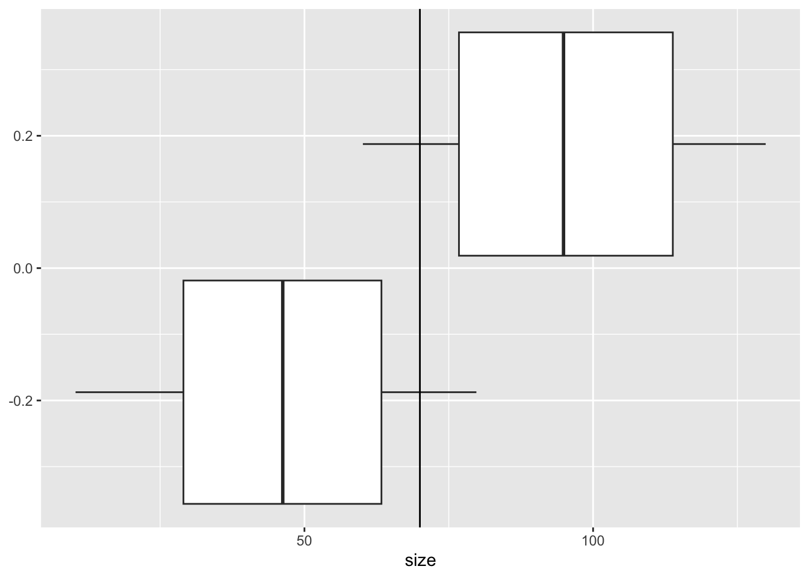
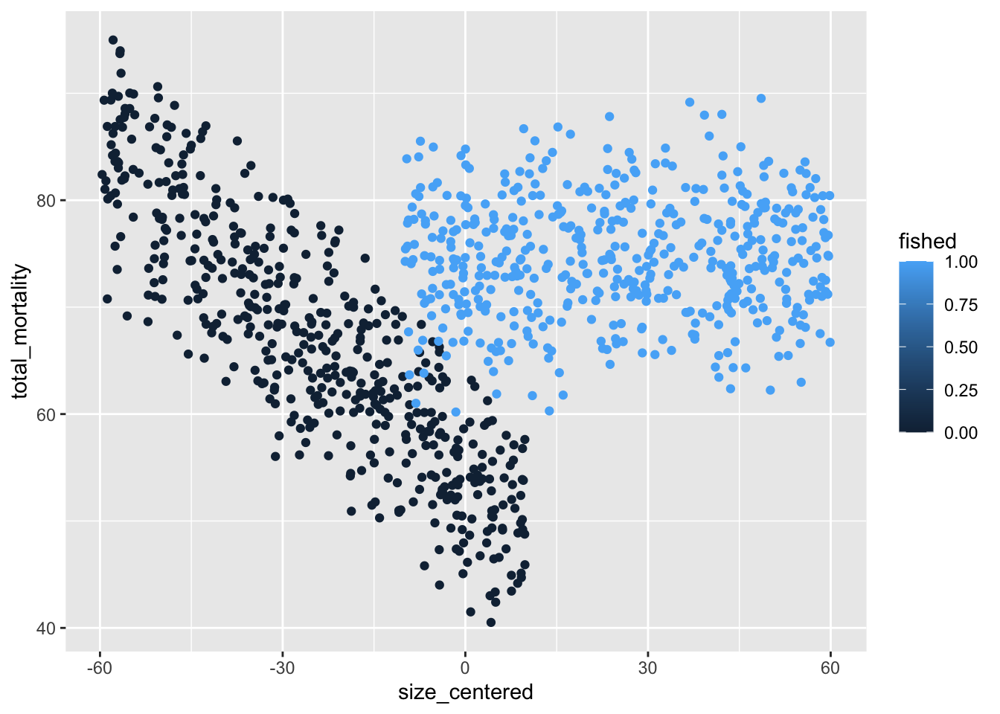
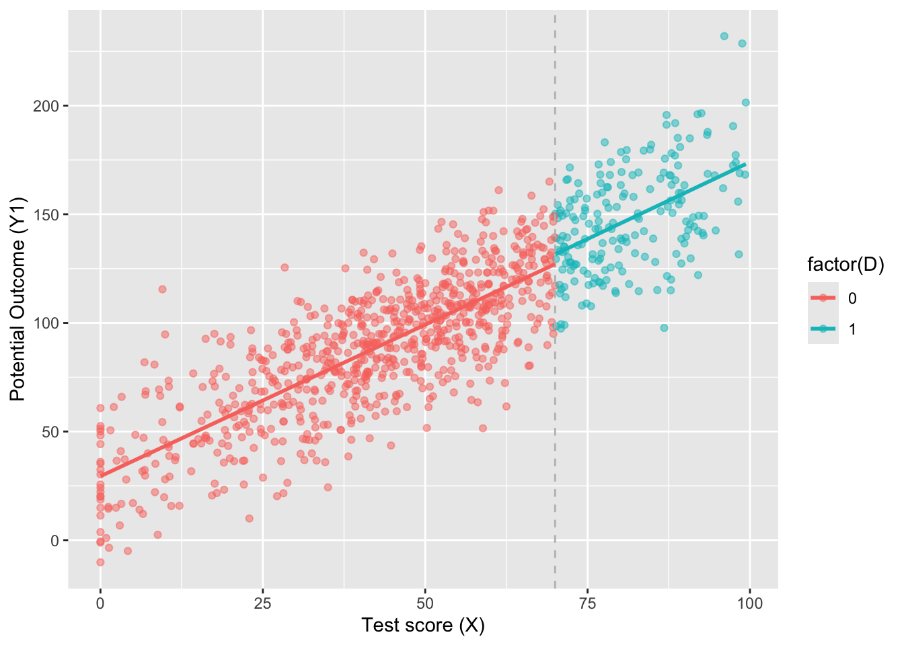

Regression Discontinuinty Designs
The key concept
A threshold in a continuous variable determines treatment assignment
Running variable (or “score”), X: a continuously distributed variable with a clearly defined cutoff (c) that determines which units are assigned to treatment and which ones are assigned to control.
Prior to the treatment, the outcome should not differ between the treatment and control group (continuity assumption). The distribution of the variable which indicates the threshold should have no jumps around this cutoff value.
Theory
There are two different variants of the RDD:
sharp RDD: the threshold separates the treatment and control group exactly
fuzzy RDD: the threshold influences the probability of being treated. this is in fact an instrumental variable approach (estimating a Local Average Treatment Effect [LATE])
The value of the outcome (Y) for individuals just below the threshold is the missing counterfactual outcome. It increases continuously with the cutoff variable, as opposed to the treatment.
Here are some nice elaborations and fifures on these two variants of RDD from the World Bank

Fuzzy RDD
In fuzzy designs, the probability of treatment is discontinuous at the cutoff, but not to the degree of a definitive 0 to 1 jump. For example, if food stamp eligibility is given to all households below a certain income, but not all households receive the food stamps, then the assignment rule defines treatment status probabilistically but not perfectly. Thus, the design is fuzzy. The fuzziness may result from imperfect compliance with the law/rule/program; imperfect implementation that treated some non-eligible units or neglected to treat some eligible units; spillover effects; or manipulation of the eligibility index.
A fuzzy design assumes that, in the absence of the assignment rule, some of those who take up the treatment would not have participated in the program. The eligibility index acts as a nudge. The subgroup that participates in a program due to the selection rule is called compliers (see e.g. Angrist and Imbens (1994), and Imbens, Angrist, and Rubin (1996)); under the RDD, the treatment effects are estimated only for the group of compliers.”
Advantages of RDD
With an RDD approach some assumptions can be tested. Individuals or units close to the threshold are nearly identical, except for characteristics which are affected by the treatment.
RDD’s strengths include that we can:
- illustrate the design graphically
- test some of the underlying assumptions and support arguments through data visualization
- reliably (unbiased) estimates local average treatment effects
- include relevant confounders in model
Application Demo
Load required packages. In this demo, we will use the package “rdrobust”
Code
install.packages("rdrobust",
repos = "http://cran.us.r-project.org")
install.packages("rddensity",
repos = "http://cran.us.r-project.org")Code
library(tidyverse) # ggplot(), %>%, mutate(), and friends
# library(broom) # Convert models to data frames
library(rdrobust) # For robust nonparametric regression discontinuity
library(rddensity) # For nonparametric regression discontinuity density tests
# library(modelsummary) # Create side-by-side regression tablesSimulate data for demo
Demo Question: fishing mortality on crabs
We are interested in the causal effect of fishing on crab mortality. This question is surprisingly hard to answer because it’s hard to tease apart natural mortality from fishing mortality, but it is an important effect to estimate for fisheries management.
Code
### Make column for observation ID
crab_data <- data.frame(id = seq(1, 1000),
### Add columns for explanatory variables
### Add column for treatment variable
fished = c(rep(0, 500), rep(1, 500)),
### Add column for body size
size = c(runif(500, min = 10, max = 80),
runif(500, min = 60, max = 130)),
### And the rest of the covariates
sst = runif(1000, min = 10, max = 16),
salinity = runif(1000, min = 1, max = 10),
npp = runif(1000, min = 0, max = 1),
### And the error term
error = rnorm(1000, mean = 0, sd = 2))
### Visualize
ggplot(crab_data) +
geom_boxplot(aes(x = size, group = fished)) +
geom_vline(xintercept = 70)
Code
### center size at legal catch size
crab_data <- crab_data %>%
mutate(size_centered = size - 70)
### Make column for outcome variable (total mortality)
crab_data <- crab_data %>%
mutate(natural_mortality = 10 + -0.4*size_centered + 2*sst + 0.3*npp + 1.5*salinity + error,
fishing_mortality = ifelse(size_centered < 0 & fished == 0,
10 + -0.1*size_centered,
ifelse(size_centered < 0 & fished == 1,
30 + 0.4*size_centered,
ifelse(size_centered > 0 & fished == 0,
10 + -0.1*size_centered,
30 + 0.4*size_centered))),
total_mortality = natural_mortality + fishing_mortality)
### Visualize mortality outcomes
ggplot(crab_data) +
geom_point(aes(x = size_centered,
y = natural_mortality,
color = fished))
Code
ggplot(crab_data) +
geom_point(aes(x = size_centered,
y = fishing_mortality,
color = fished))
Code
ggplot(crab_data) +
geom_point(aes(x = size_centered,
y = total_mortality,
color = fished))
Code
### Visualize covariates
ggplot(crab_data) +
geom_point(aes(x = size_centered,
y = sst,
color = fished))
Code
ggplot(crab_data) +
geom_point(aes(x = size_centered,
y = salinity,
color = fished))
Code
ggplot(crab_data) +
geom_point(aes(x = size_centered,
y = npp,
color = fished))Step 1: Determine if process of assigning treatment is rule-based

In order to be legally harvest, crabs must be larger than 70mm. Crabs smaller than 70mm are not legal to harvest. Harvesting is thus rule-based, according to size. Here, we would probably expect mortality to decline with body size, but the harvest rule changes this relationship at the discontinuity.
Step 2: Determine if the design is fuzzy or sharp
Since we know that the program was applied based on a rule, we next want to figure out how strictly the rule was applied (e.g. was there a lot of illegal harvest of crabs that were too small? Were all crabs over 70mm harvested? ).The threshold was 70 mm for legal harvest — e.g., did people who caught crabs that scored 68 mm slip through cracks? The easiest way to check this is with a graph, and we can get exact numbers to verify with a table.
Code
ggplot(crab_data, aes(x = size_centered, y = fishing_mortality, color = fished)) +
# Make points small and semi-transparent since there are lots of them
geom_point(size = 0.5, alpha = 0.5,
position = position_jitter(width = 0, height = 0.25, seed = 1234)) +
# Add vertical line
geom_vline(xintercept = 0) +
# Add labels
labs(x = "Size (centered on 70 as cut-off)", y = "Fished or not") +
# Turn off the color legend, since it's redundant
guides(color = "none")
This discontinuity looks fuzzy rather than sharp We see some evidence of non-compliance around the size-based harvest rules. We will verify in Step 3.

Step 3: Check for discontinuity in running variable around cutpoint
We next verify our conclusionss from the above visualization that the design is a fuzzy disconintuinity with a table examinging if there crabs under 70 mm harvested, and some over 70mm that weren’t.
Code
crab_data %>%
group_by(fished, size_centered<= 0) %>%
summarize(count = n())`summarise()` has grouped output by 'fished'. You can override using the
`.groups` argument.# A tibble: 4 × 3
# Groups: fished [2]
fished `size_centered <= 0` count
<dbl> <lgl> <int>
1 0 FALSE 63
2 0 TRUE 437
3 1 FALSE 436
4 1 TRUE 64Based on the table, we can conclude this is a fuzzy design becuase there are some crabs over the cut-off that were not fished, and some under that were fished.
Step 4: Check for discontinuity in outcome across running variable
Next, we need to see if any crabs self selected on either side of the size threshold; this seems unlikely. But, first, we’ll make a histogram of the running variable (size) and see if there are any big jumps around the threshold:
Code
ggplot(crab_data, aes(x = size_centered, fill = fished)) +
geom_histogram(binwidth = 2, color = "white", boundary = 0) +
geom_vline(xintercept = 0) +
labs(x = "Size", y = "Count", fill = "Legal to fish")Warning: The following aesthetics were dropped during statistical transformation: fill
ℹ This can happen when ggplot fails to infer the correct grouping structure in
the data.
ℹ Did you forget to specify a `group` aesthetic or to convert a numerical
variable into a factor?
Here it doesn’t look like there’s a jump around the cutoff. There’s a tiny visible difference between the height of the bars right before and right after the 70-mm sie threshold (centered at 0), but it seems to follow the general shape of the overall distribution.
Step 5: Measure the size of the effect
There’s a fuzzy discontinuity, but how big is it? And is it statistically significant?
Fuzzy RDD as IV
This is likely a fuzzy RDD set up: some crabs < 70mm are probably harvested illegally, and fishers are not catching every crab > 70mm. So the treatment assigned is not necessarily the treatment received. To estimate the effect of fishing on total crab mortality in a fuzzy RDD, we take a two stage least squares approach (using a the fuzzy RDD as an IV.
Recall from Session 12 that instruments let us isolate causal effects for just compliers: they let us find the complier average causal effect, or CACE (the effect of a treatment for subjects/units who comply with the experimental treatment assigned to their sample group).
In this case, the instrument is fairly easy and straightforward: we create a variable that indicates if someone is above or below the threshold. That’s all. This variable essentially measures what should have happened rather than what actually happened.
Surprisingly, it meets all the qualifications of an instrument too:
- Relevance (\(Z \rightarrow X\) and \(\operatorname{Cor}(Z, X) \neq 0\)): The cutoff causes access to fishing of crabs that leads to mortality.
- Exclusion (\(Z \rightarrow X \rightarrow Y\) and \(Z \nrightarrow Y\) and \(\operatorname{Cor}(Z, Y | X) = 0\)): The cutoff causes fishing mortality only through the harvest program.
- Exogeneity (\(U \nrightarrow Z\) and \(\operatorname{Cor}(Z, U) = 0\)): Unobserved confounders between the harvest program and fishing mortality are unrelated to the cutoff, since it may be biologically meaningful but the exact number is somewhat arbitrary.
Analyze fuzzy RDD
First we will create the IV from the cut-off. We have already centered the running variable (size) on 0, so now we just need to create an indicator variable if the size if above or below 0.
##NEED TO FINISHED
Code
size_centered <- crab_data %>%
mutate(above_cutoff = size_centered >= 0,
below_cutoff = size_centered <= 0)2SLS
We could manually run the first stage model, generate predicted tutoring and then use those predicted values in the second stage model like we did in the instrumental variables example, but that’s tedious and nobody wants to do all that work. We’ll use iv_robust() from the estimatr package instead.
Note: be careful! if there are missing values (in D), you may fail to replicate the fuzzy effect by hand sum(is.na(crab_data$fished)) #ok for the simulated data
Instead, we need to run a 2SLS model that includes our instrument in the first stage, which will then remove the endogeneity built into participation in the program. We’ll estimate this set of models:
##NEED TO FINISHED - IS THIS RIGHT??? \[ \begin{aligned} \widehat{\text{Fished}} &= \gamma_0 + \gamma_1 \text{Size}_\text{centered} + \gamma_2 \text{Below cutoff} + \omega \\ \text{Fishing Mortality} &= \beta_0 + \beta_1 \text{Size}_\text{centered} + \beta_2 \widehat{\text{Fished}} + \epsilon \end{aligned} \]
Fuzzy nonparametric estimation
We can also use nonparametric methods to measure the size of the fuzzy gap at the cutoff. We’ll use rdrobust(). T
To do fuzzy estimation with rdrobust(), use the fuzzy argument to specify the treatment column (or fished in our case). Importantly (and confusingly! this took me waaaaay too long to figure out!), you do not need to specify an instrument (or even create one!). All you need to specify is the column that indicates treatment status—rdrobust() will do all the above/below-the-cutoff instrument stuff behind the scenes for you.
##NEED TO FINISHED WITH IV CREATED AS ENTRANCE EXAM
Code
rdrobust(y = crab_data$fishing_mortality, x = crab_data$size_centered,
c = 0, fuzzy = crab_data$fished) %>%
summary()Fuzzy RD estimates using local polynomial regression.
Number of Obs. 1000
BW type mserd
Kernel Triangular
VCE method NN
Number of Obs. 501 499
Eff. Number of Obs. 138 151
Order est. (p) 1 1
Order bias (q) 2 2
BW est. (h) 12.418 12.418
BW bias (b) 22.143 22.143
rho (h/b) 0.561 0.561
Unique Obs. 501 499
First-stage estimates.
=============================================================================
Method Coef. Std. Err. z P>|z| [ 95% C.I. ]
=============================================================================
Conventional 0.006 0.126 0.046 0.964 [-0.241 , 0.252]
Robust - - 0.487 0.627 [-0.209 , 0.347]
=============================================================================
Treatment effect estimates.
=============================================================================
Method Coef. Std. Err. z P>|z| [ 95% C.I. ]
=============================================================================
Conventional -1.493 473.812 -0.003 0.997 [-930.149 , 927.162]
Robust - - 0.415 0.678 [-825.320 , 1269.251]
=============================================================================That’s all! Using nonparametric methods, with a triangular kernel and a bandwidth of ±12.96, the causal effect of the tutoring program for compliers in the bandwidth is 9.683.
We can (and should!) do all the other nonparametric robustness checks that we talked about in the regression discontinuity example, like modifying the bandwidth (ideal, half, double) and messing with the kernel (uniform, triangular, Epanechnikov) to see how robust the finding is. But again, we won’t do any of that here.
Useful references and websites for more resources
https://dimewiki.worldbank.org/Regression_Discontinuity
the MixTape by Scott Cummingham: https://mixtape.scunning.com/06-regression_discontinuity
RDD with interactions: https://www.jepusto.com/rdd-interactions/
Simulate Data
Modified from the MixTape by Scott Cummingham: https://mixtape.scunning.com/06-regression_discontinuity
Code
library(tidyverse)
# simulate the data
dat <- tibble(
x = rnorm(1000, 50, 25)
) %>%
mutate(
x = if_else(x < 0, 0, x)
) %>%
filter(x < 100)
# cutoff at x = 70, no jump
dat <- dat %>%
mutate(
D = if_else(x > 70, 1, 0),
y1 = 25 + 0 * D + 1.5 * x + rnorm(n(), 0, 20)
)
ggplot(aes(x, y1, colour = factor(D)), data = dat) +
geom_point(alpha = 0.5) +
geom_vline(xintercept = 70, colour = "grey", linetype = 2)+
stat_smooth(method = "lm", se = F) +
labs(x = "Test score (X)", y = "Potential Outcome (Y1)")`geom_smooth()` using formula = 'y ~ x'
Code
## simulate the discontinuity
dat <- dat %>%
mutate(
y2 = 25 + 40 * D + 1.5 * x + rnorm(n(), 0, 20)
)
# figure
ggplot(aes(x, y2, colour = factor(D)), data = dat) +
geom_point(alpha = 0.5) +
geom_vline(xintercept = 70, colour = "grey", linetype = 2) +
stat_smooth(method = "lm", se = F) +
labs(x = "Test score (X)", y = "Potential Outcome (Y)")`geom_smooth()` using formula = 'y ~ x'
Code
# simultate nonlinearity
dat <- tibble(
x = rnorm(1000, 100, 50)
) %>%
mutate(
x = case_when(x < 0 ~ 0, TRUE ~ x),
D = case_when(x > 140 ~ 1, TRUE ~ 0),
x2 = x*x,
x3 = x*x*x,
y3 = 10000 + 0 * D - 100 * x + x2 + rnorm(1000, 0, 1000)
) %>%
filter(x < 280)
ggplot(aes(x, y3, colour = factor(D)), data = dat) +
geom_point(alpha = 0.2) +
geom_vline(xintercept = 140, colour = "grey", linetype = 2) +
stat_smooth(method = "lm", se = F) +
labs(x = "Test score (X)", y = "Potential Outcome (Y)")`geom_smooth()` using formula = 'y ~ x'
Code
ggplot(aes(x, y3, colour = factor(D)), data = dat) +
geom_point(alpha = 0.2) +
geom_vline(xintercept = 140, colour = "grey", linetype = 2) +
stat_smooth(method = "loess", se = F) +
labs(x = "Test score (X)", y = "Potential Outcome (Y)")`geom_smooth()` using formula = 'y ~ x'
–>
We can check the size two different ways: parametrically (i.e. using lm() with specific parameters and coefficients), and nonparametrically (i.e. not using lm() or any kind of straight line and instead drawing lines that fit the data more precisely). We’ll do it both ways.
Parametric estimation
First we’ll do it parametrically by using linear regression. Here we want to explain the variation in final scores based on the entrance exam score and participation in the tutoring program:
\[ \text{Exit exam} = \beta_0 + \beta_1 \text{Entrance exam score}_\text{centered} + \beta_2 \text{Tutoring program} + \epsilon \]
Nonparametric estimation
Instead of using linear regression to measure the size of the discontinuity, we can use nonparametric methods. Essentially this means that R will not try to fit a straight line to the data—instead it’ll curve around the points and try to fit everything as smoothly as possible.
The rdrobust() function makes it really easy to measure the gap at the cutoff with nonparametric estimation. Here’s the simplest version: